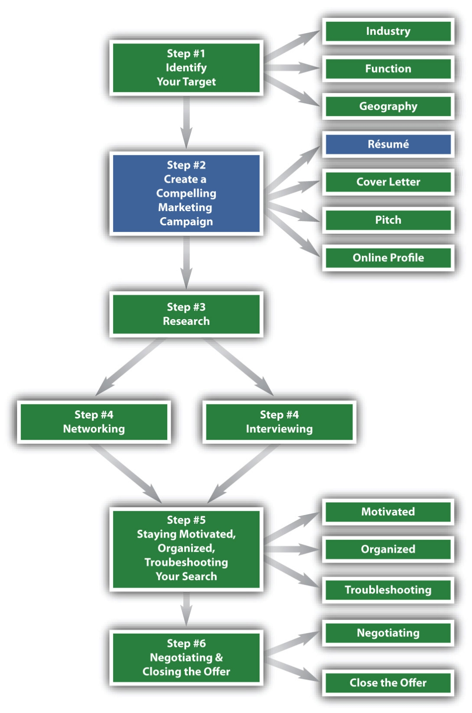

Figure 4.1 The Six-Step Job Search Process—Step 2
Market Yourself First with Your Résumé
At this point in your search, you have completed step 1 with a specific industry, function, and geography in mind.
Step 2 (creating a compelling marketing campaign) consists of four distinct tools that can help construct a strong, effective, and successful job search:
This chapter will focus only on your résumé. Chapter 5 "Step 2 (Continued): Create a Compelling Marketing Campaign, Part II: Cover Letter, Pitch, and Online Profile" will complete this step, and we will then focus on the remainder of your marketing campaign: your cover letter, your pitch, and your online profile.
Marketing Focus. Your résuméA brief written account of personal, educational, and professional qualifications and experience, usually prepared by an applicant for a job. is a marketing document that sells your candidacy. It provides an outline of your educational background, your work experience, and the key skills you have acquired. Your résumé should be marketed in a format that is pleasing to read, efficient in its use of the English language, and so concise that it fits on one page. Once you have approximately ten years of experience, it is more acceptable to have a two-page résumé, but until then, you should adhere to a one-page document. Recruiters can frown on the audacityRefers to a bold move or presumption. of a college student with a two-page résumé. Whether you are not sure you can fill a one-page résumé, or whether you think it’s not possible to fit your information to only one page, this chapter will help you get to your goal: an exceptional, one-page résumé.
Quality, Clarity, and Accuracy. Your résumé is the most critical component, or cornerstone, of your marketing campaign and it must meet two important criteria:
Your résumé must be written in a clear and concise manner so the reader can quickly grasp what you offer as a candidate. Most seasoned recruiters scan a résumé in about seven to ten seconds, but do not let that short review time throw you. Recruiters have an eye for the key things to look for in a résumé, so a lot of care should be put into its construction. That construction should highlight the following features:
Proofread your résumé several times, use spell check, and ask someone who is exceptional at proofreading to review it. Always assume that an error lurks somewhere in your résumé and review it and review it and review it until you find that error! Résumés often have the following common errors:
How to Craft the Perfect Résumé. This is a trick title because there is no perfect résumé. You could always choose to have a particular bullet written in ways that are grammatically correct, are results oriented, and use action verbs, but writing a résumé is not a perfect science. You could show your résumé to five different recruiters and you might get five different opinions. There is no need to worry. The important thing is that it is well-written and highlights your accomplishments (no matter how big or how not so big). It’s important that the format be consistent and that you get an opinion from a professional, whether it is someone from career services, a professor, or a person who is currently working in the field in which you are most interested.
On-Campus Recruiting. If you are participating in on-campus recruitingManaged by a college’s career services office. Specific companies will come on campus to interview candidates. Second rounds and final rounds will follow either on campus or at the employer’s offices. (when a company comes onto your campus to recruit), three interview scenarios are possible: open, closed, or a mixed schedule. The school dictates the type of schedule, and it’s important to know in which type you are participating:
Whether you drop your résumé for an open schedule or you are selected to participate in a closed schedule, the recruiting cycle is fast paced and résumés can be easily missed due to no fault of the job seeker and résumé writer. Sometimes recruiters review hundreds of résumés to find the ten or twelve they will pursue, and sometimes résumés can be missed because of something as simple as pages sticking to one another.
Should your résumé be one of the many that isn’t selected, you can write to the recruiter, using your cover letter to make a strong case for why you should be considered. In some cases, this may work to get you an interview. In other cases, it will not. You can easily be passed over for no reason.
The recruiting process is not perfect, so it’s recommended that you apply for as many positions as possible. Never rely solely on the submission of one résumé (Chapter 5 "Step 2 (Continued): Create a Compelling Marketing Campaign, Part II: Cover Letter, Pitch, and Online Profile" will give you additional strategies to get your foot in the door). Instead, when on-campus recruiting takes place, apply for all positions that fit your strengths and interests.
Off-Campus Recruiting. Don’t limit your search to only on-campus opportunities because off-campus opportunities can also be fruitful. Conducting both an on-campus and off-campus job search only increases the number of opportunities you can consider. You will want to pursue off-campus opportunities for three reasons:
The main difference between on-campus and off-campus recruitingNot managed by a college’s career services office. Instead, a candidate manages all company interaction and follow-up. Advice can still be sought from career services, however, it’s the student’s responsibility to manage the overall process. is that in off-campus recruiting, you manage the entire process. You are responsible for getting your résumé into the hands of the company recruiters or hiring managers. You schedule the interview and follow up on your own. An off-campus job search demands that you are organized and proactive enough to keep things moving.
Make an Exceptional First Impression. Your résumé will probably be the first impression a potential employer has of you and your qualifications, so it must hold their attention long enough to propel your job search forward. Use this opportunity to impress and to intrigue them enough to want to interview you. This chapter will outline multiple strategies you can employ to be seriously considered for numerous job opportunities.